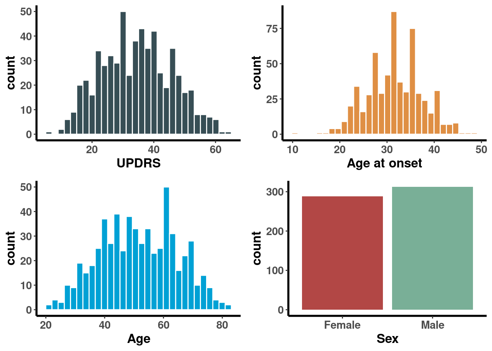
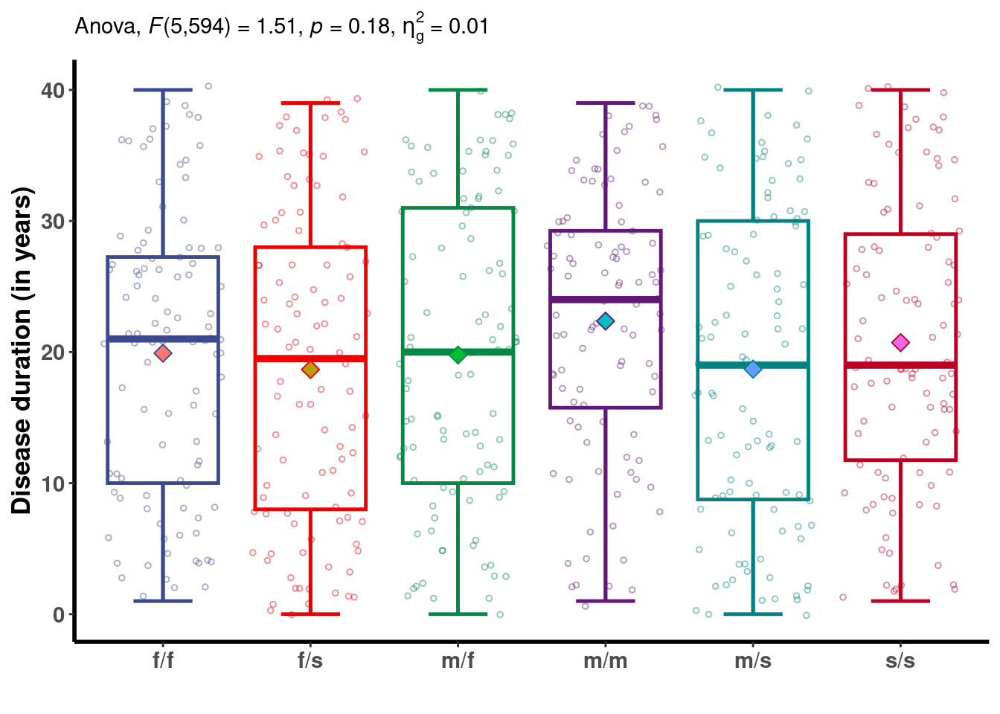
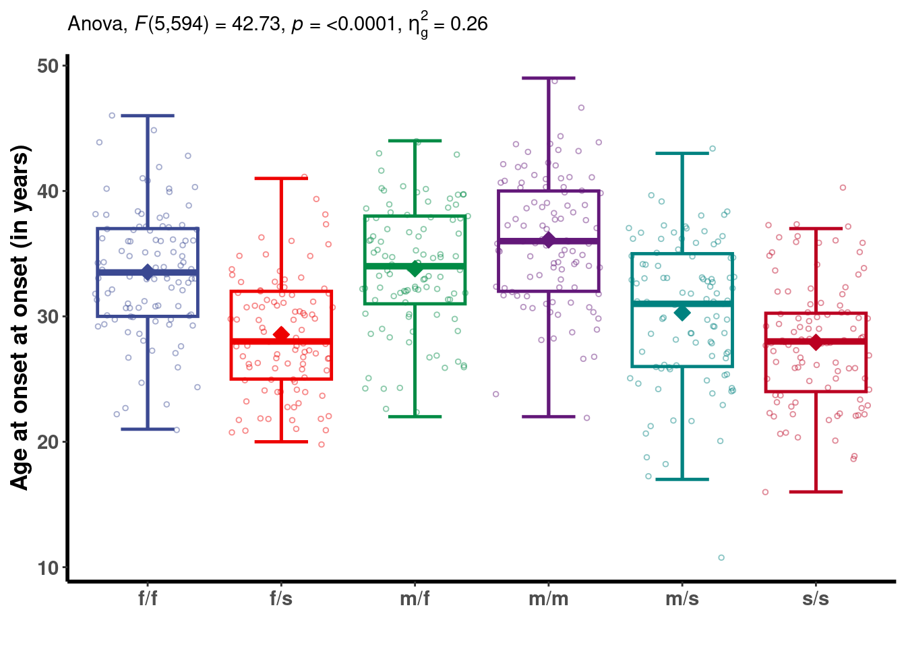
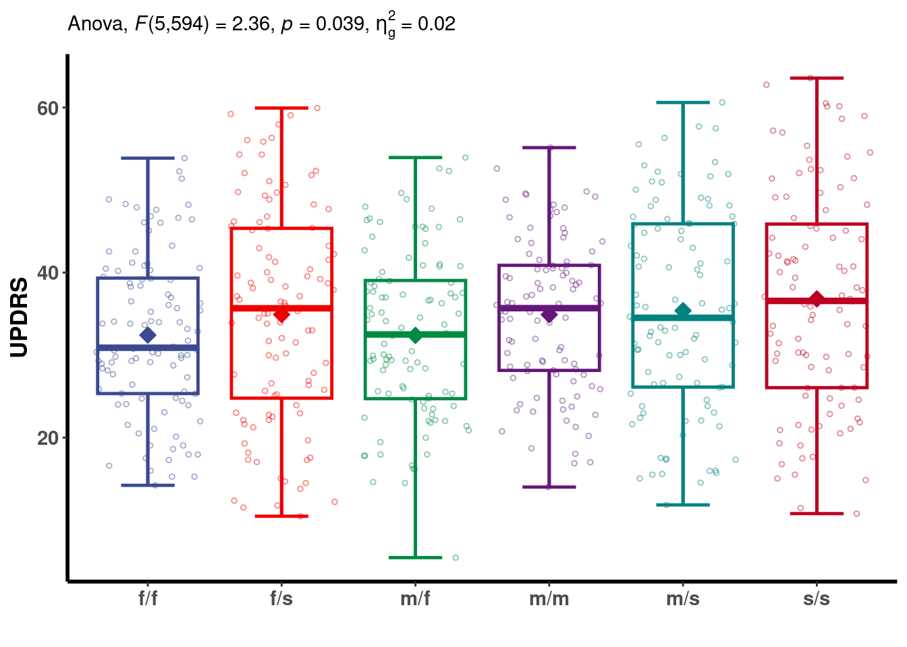
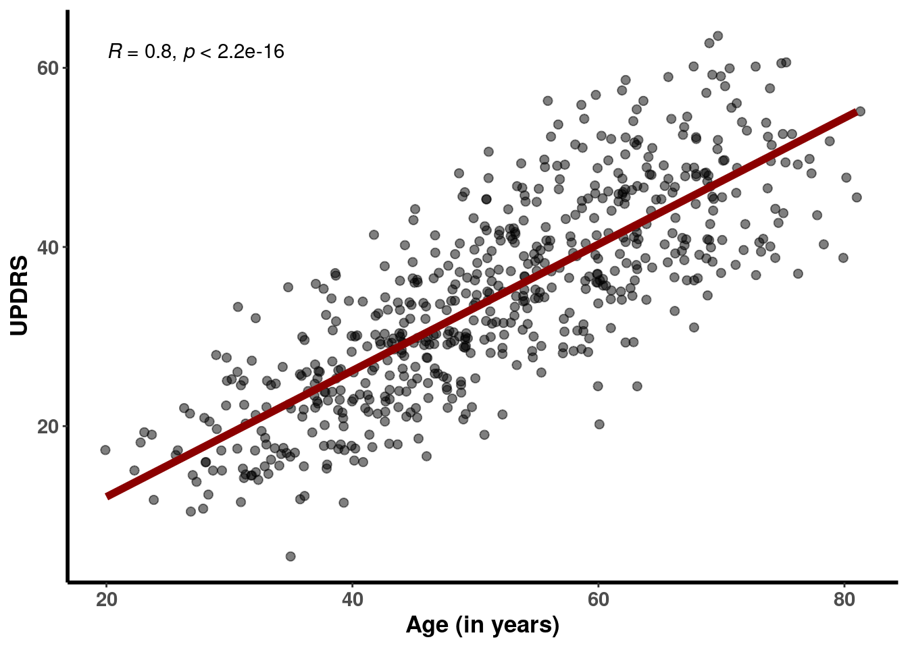
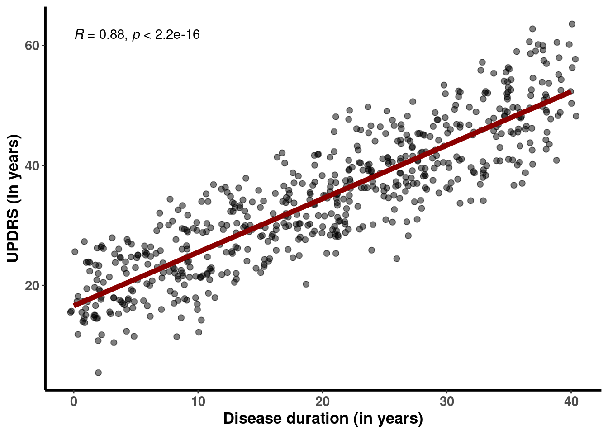
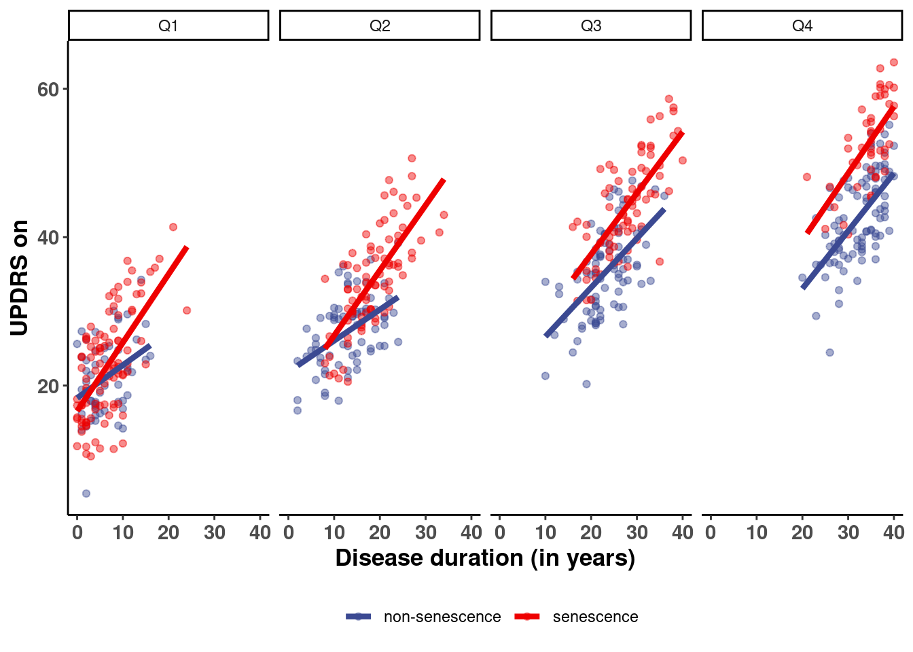
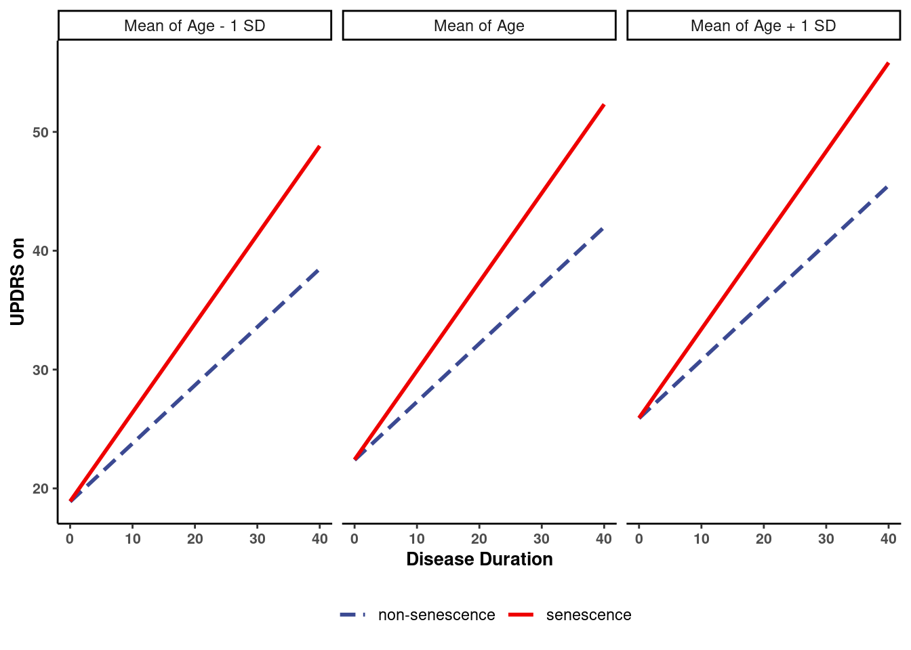

Chapitre 4 Exemple 1
4.1 Explications
4.1.1 Context
La cohorte dont nous disposons est constituée de 600 patients atteints de la maladie de Parkinson, tous porteurs d’une mutation spécifique parmi un total de six mutations différentes. Dans le cadre de notre étude, nous suivons ces patients et mesurons leur score UPDRS, un indicateur cognitif largement utilisé pour évaluer la sévérité de la maladie de Parkinson. Nous avons également recueilli d’autres informations, notamment la durée de la maladie, l’âge au moment du diagnostic, et l’âge au moment de la participation à l’étude.
4.1.2 Problématiques
Critère de jugement principal :
Nous visons à comprendre les facteurs qui influencent l’UPDRS (Unified Parkinson’s Disease Rating Scale) qui est indicateur de la gravité de la maladie de Parkinson et à éventuellement le prédire en utilisant des variables telles que la durée de la maladie (disease duration). Nous avons des raisons de croire que la gravité de la maladie varie en fonction des mutations spécifiques (mutation senescence vs non-senescence), et nous prévoyons de prendre en compte cette variation. De plus, nous supposons que l’âge au moment de la participation à l’étude peut influencer l’UPDRS, et nous avons l’intention de corriger cette influence. En outre, il est possible que le sexe des patients ait également un impact, que nous examinerons.
Critère de jugement secondaire :
Nous cherchons également à évaluer dans quelle mesure la mutation peut influencer l’âge auquel le diagnostic de la maladie de Parkinson est posé et le moment où la maladie se manifeste.
4.2 Importation et data management
Code
data <- read.table("/home/baptiste.criniere/Documents/Trainings/Linear regression/Simulation/Data/Exercice1.txt")
data <- data %>%
dplyr::mutate(Mutation = Mutation %>% factor) %>%
dplyr::mutate(Sex = Sex %>% factor) %>%
dplyr::mutate(Mutation_bis = ifelse(Mutation %in% c("m/s", "f/s", "s/s"), "senescence", "non-senescence"))
data %>%
DT::datatable(rownames = F,
extensions = "Buttons",
options = list(pageLength = 10,
dom = "Blfrtip",
buttons = c("copy", "csv", "excel"))) %>%
DT::formatRound(columns=c("UPDRS"), digits=3) %>%
DT::formatStyle(columns = 'Mutation_bis', whiteSpace = 'nowrap')4.3 Statistiques univariés
4.3.1 Table
Voici la première table décrivant le jeu de données. On peut constater que les groupes de mutations sont équilibrés.
Code
| Mean/Count (SD/%) | |
|---|---|
| n = 600 | |
| UPDRS | |
| 34.5 (11.4) | |
| Disease duration | |
| 20.0 (11.3) | |
| Age at onset | |
| 31.7 (5.8) | |
| Age | |
| 51.7 (13.0) | |
| Sex | |
| Female | 288 (48%) |
| Male | 312 (52%) |
| Mutation | |
| f/f | 100 (16.7%) |
| f/s | 100 (16.7%) |
| m/f | 100 (16.7%) |
| m/m | 100 (16.7%) |
| m/s | 100 (16.7%) |
| s/s | 100 (16.7%) |
| Mutation 2 | |
| non-senescence | 300 (50%) |
| senescence | 300 (50%) |
4.3.2 Figures
On observe que les variables continues Age, Age_at_onset et UPDRS semblent suivre des lois normales. De plus, il y a légèrement plus d’hommes dans notre base de données que de femmes.
Code
fig1 <- data %>%
ggplot(aes(x = UPDRS))+
geom_histogram(color = "white", fill = ggsci::pal_jama()(10)[1])+
theme_classic()+
theme(legend.position = "none",
axis.line = element_line(size = 1, color = "black"),
axis.text = element_text(face = "bold", size = 11),
axis.title = element_text(face = "bold", size = 13))
fig2 <- data %>%
ggplot(aes(x = Age_at_onset))+
geom_histogram(color = "white", fill = ggsci::pal_jama()(10)[2])+
labs(x = "Age at onset")+
theme_classic()+
theme(legend.position = "none",
axis.line = element_line(size = 1, color = "black"),
axis.text = element_text(face = "bold", size = 11),
axis.title = element_text(face = "bold", size = 13))
fig3 <- data %>%
ggplot(aes(x = Age))+
geom_histogram(color = "white", fill = ggsci::pal_jama()(10)[3])+
theme_classic()+
theme(legend.position = "none",
axis.line = element_line(size = 1, color = "black"),
axis.text = element_text(face = "bold", size = 11),
axis.title = element_text(face = "bold", size = 13))
fig4 <- data %>%
ggplot(aes(x = Sex, fill = Sex))+
geom_bar()+
scale_fill_manual(values = ggsci::pal_jama()(10)[4:5])+
theme_classic()+
theme(legend.position = "none",
axis.line = element_line(size = 1, color = "black"),
axis.text = element_text(face = "bold", size = 11),
axis.title = element_text(face = "bold", size = 13))
ggarrange(fig1, fig2, fig3, fig4)
4.4 Exploration bi-variée
4.4.1 Effet du Sexe
4.4.1.1 Table 1
Il ne semble pas y avoir d’effet du sexe sur les autres variables, à l’exception de l’âge au début des symptômes, pour laquelle les hommes présentent un âge au début légèrement inférieur à celui des femmes.
Code
| Female | Male | P-Value | |
|---|---|---|---|
| n = 288 | n = 312 | ||
| Mutation | 0.143 | ||
| f/f | 54 (18.8%) | 46 (14.7%) | |
| f/s | 43 (14.9%) | 57 (18.3%) | |
| m/f | 55 (19.1%) | 45 (14.4%) | |
| m/m | 52 (18.1%) | 48 (15.4%) | |
| m/s | 40 (13.9%) | 60 (19.2%) | |
| s/s | 44 (15.3%) | 56 (17.9%) | |
| Age at onset | 0.01 | ||
| 32.3 (6.0) | 31.1 (5.6) | ||
| Disease duration | 0.62 | ||
| 20.3 (11.2) | 19.8 (11.4) | ||
| Age | 0.114 | ||
| 52.6 (12.7) | 50.9 (13.2) | ||
| UPDRS | 0.403 | ||
| 34.9 (11.1) | 34.1 (11.7) |
4.4.2 Effet de la mutation
Il y a un effet significatif du type de mutation sur les variables suivantes : âge au début des symptômes, âge, et UPDRS. On remarque que les individus porteurs d’une mutation liée à la sénescence semblent avoir en moyenne un âge au début des symptômes plus élevé et un score UPDRS plus élevé.
Code
| f/f | f/s | m/f | m/m | m/s | s/s | P-Value | |
|---|---|---|---|---|---|---|---|
| n = 100 | n = 100 | n = 100 | n = 100 | n = 100 | n = 100 | ||
| Age at onset | <.001 | ||||||
| 33.5 (4.9) | 28.6 (4.5) | 33.8 (4.9) | 36.1 (5.0) | 30.3 (5.7) | 27.9 (4.9) | ||
| Disease duration | 0.152 | ||||||
| 19.9 (10.9) | 18.7 (11.9) | 19.8 (11.6) | 22.4 (10.1) | 18.7 (12.1) | 20.7 (11.0) | ||
| Age | <.001 | ||||||
| 53.4 (11.9) | 47.2 (12.7) | 53.6 (13.3) | 58.5 (11.6) | 49.0 (13.1) | 48.6 (12.0) | ||
| UPDRS | 0.034 | ||||||
| 32.4 (9.7) | 34.9 (13.1) | 32.4 (10.1) | 34.9 (9.2) | 35.4 (12.3) | 36.8 (13.1) |
4.4.2.1 Lien entre Disease duration & Mutation
Dans ce contexte, la variable que l’on cherche à expliquer est la durée de la maladie (DD) en fonction de la variable explicative “mutation”. L’équation qui modélise cette relation est donc la suivante : \(DD = \beta_0 + \beta_1 Mutation + \epsilon\)
On réalise une ANOVA afin de répondre à ce problème. La p-value associée au test ANOVA est supérieure au seuil de 5%. Par conséquent, nous ne pouvons pas rejeter l’hypothèse nulle, et nous concluons qu’il n’y a pas de preuve d’un lien entre la mutation et la durée de la maladie.
Code
aov <- data %>% rstatix::anova_test(Disease_duration ~ Mutation)
data %>%
ggplot(aes(x = Mutation, y = Disease_duration, color = Mutation))+
stat_boxplot(geom ='errorbar', width = 0.4, lwd = 0.85)+
geom_boxplot(outlier.shape = NA, lwd = 0.85)+
geom_jitter(alpha = 0.45, shape = 1, size = 1)+
stat_summary(aes(fill = Mutation), fun = mean, geom = "point", shape = 23, size = 3, position = position_dodge(width=0.75))+
scale_color_aaas()+
labs(subtitle = rstatix::get_test_label(aov, detailed = TRUE),
x = "",
y = "Disease duration (in years)")+
theme_classic()+
theme(legend.position = "none",
axis.line = element_line(size = 1, color = "black"),
axis.text = element_text(face = "bold", size = 11),
axis.title = element_text(face = "bold", size = 13))
4.4.2.2 Age at onset & Mutation
Dans ce contexte, la variable que l’on cherche à expliquer est l’âge de diagnostic (Age) en fonction de la variable explicative “mutation”. L’équation qui modélise cette relation est donc la suivante : \(Age = \beta_0 + \beta_1 Mutation + \epsilon\)
La p-value associée au test ANOVA est inférieure au seuil de 5%, ce qui indique qu’il existe un lien statistiquement significatif entre le type de mutation et l’âge au moment du diagnostic. Par conséquent, nous pouvons effectuer des comparaisons post-hoc afin de déterminer les différences spécifiques entre les types de mutations et l’âge au moment du diagnostic.
Code
aov <- data %>% rstatix::anova_test(Age_at_onset ~ Mutation)
data %>%
ggplot(aes(x = Mutation, y = Age_at_onset, color = Mutation))+
stat_boxplot(geom ='errorbar', width = 0.4, lwd = 0.85)+
geom_boxplot(outlier.shape = NA, lwd = 0.85)+
geom_jitter(alpha = 0.45, shape = 1, size = 1)+
stat_summary(aes(fill = Mutation), fun = mean, geom = "point", shape = 23, size = 3, position = position_dodge(width=0.75)) +
theme_classic()+
scale_color_aaas()+
scale_fill_aaas()+
labs(subtitle = rstatix::get_test_label(aov, detailed = TRUE),
x = "",
y = "Age at onset at onset (in years)")+
theme(legend.position = "none",
axis.line = element_line(size = 1, color = "black"),
axis.text = element_text(face = "bold", size = 11),
axis.title = element_text(face = "bold", size = 13))
## Anova Table (Type II tests)
##
## Response: Age_at_onset
## Sum Sq Df F value Pr(>F)
## Mutation 5320.6 5 42.732 < 2.2e-16 ***
## Residuals 14791.8 594
## ---
## Signif. codes: 0 '***' 0.001 '**' 0.01 '*' 0.05 '.' 0.1 ' ' 1Code
## # A tibble: 15 × 5
## term group1 group2 p.adj p.adj.signif
## <chr> <chr> <chr> <dbl> <chr>
## 1 Mutation f/f f/s 5.58e-10 ****
## 2 Mutation f/f m/f 9.99e- 1 ns
## 3 Mutation f/f m/m 3.78e- 3 **
## 4 Mutation f/f m/s 8.39e- 5 ****
## 5 Mutation f/f s/s 4.79e-10 ****
## 6 Mutation f/s m/f 4.84e-10 ****
## 7 Mutation f/s m/m 4.79e-10 ****
## 8 Mutation f/s m/s 1.36e- 1 ns
## 9 Mutation f/s s/s 9.52e- 1 ns
## 10 Mutation m/f m/m 1.49e- 2 *
## 11 Mutation m/f m/s 1.27e- 5 ****
## 12 Mutation m/f s/s 4.79e-10 ****
## 13 Mutation m/m m/s 4.79e-10 ****
## 14 Mutation m/m s/s 4.79e-10 ****
## 15 Mutation m/s s/s 1.13e- 2 *4.4.2.3 UPDRS & Mutation
Dans ce contexte, la variable que l’on cherche à expliquer est l’UPDRS (UPDRS) en fonction de la variable explicative “mutation”. L’équation qui modélise cette relation est donc la suivante : \(UPDRS = \beta_0 + \beta_1 Mutation + \epsilon\)
La p-value associée au test ANOVA est inférieure au seuil de 5%, ce qui indique qu’il existe un lien statistiquement significatif entre le type de mutation et l’UPDRS. Par conséquent, nous pouvons effectuer des comparaisons post-hoc afin de déterminer les différences spécifiques entre les types de mutations et l’UPDRS.
Code
aov <- data %>% rstatix::anova_test(UPDRS ~ Mutation)
data %>%
ggplot(aes(x = Mutation, y = UPDRS, color = Mutation))+
stat_boxplot(geom ='errorbar', width = 0.4, lwd = 0.85)+
geom_boxplot(outlier.shape = NA, lwd = 0.85)+
geom_jitter(alpha = 0.45, shape = 1, size = 1)+
stat_summary(aes(fill = Mutation), fun = mean, geom = "point", shape = 23, size = 3, position = position_dodge(width=0.75)) +
theme_classic()+
scale_color_aaas()+
scale_fill_aaas()+
labs(subtitle = rstatix::get_test_label(aov, detailed = TRUE),
x = "",
y = "UPDRS")+
theme(legend.position = "none",
axis.line = element_line(size = 1, color = "black"),
axis.text = element_text(face = "bold", size = 11),
axis.title = element_text(face = "bold", size = 13))
## Anova Table (Type II tests)
##
## Response: Age_at_onset
## Sum Sq Df F value Pr(>F)
## Mutation 5320.6 5 42.732 < 2.2e-16 ***
## Residuals 14791.8 594
## ---
## Signif. codes: 0 '***' 0.001 '**' 0.01 '*' 0.05 '.' 0.1 ' ' 1Code
## # A tibble: 15 × 5
## term group1 group2 p.adj p.adj.signif
## <chr> <chr> <chr> <dbl> <chr>
## 1 Mutation f/f f/s 0.63 ns
## 2 Mutation f/f m/f 1 ns
## 3 Mutation f/f m/m 0.635 ns
## 4 Mutation f/f m/s 0.44 ns
## 5 Mutation f/f s/s 0.0706 ns
## 6 Mutation f/s m/f 0.616 ns
## 7 Mutation f/s m/m 1 ns
## 8 Mutation f/s m/s 1 ns
## 9 Mutation f/s s/s 0.847 ns
## 10 Mutation m/f m/m 0.621 ns
## 11 Mutation m/f m/s 0.426 ns
## 12 Mutation m/f s/s 0.0666 ns
## 13 Mutation m/m m/s 1 ns
## 14 Mutation m/m s/s 0.843 ns
## 15 Mutation m/s s/s 0.949 ns4.5 Régression linéaire simple
4.5.1 Catégorisation des variables
La variable à expliquer est l’UPDRS, que l’on va chercher à expliquer par l’âge, la mutation (variable mutation_bis), la disease duration, et le sexe.
4.5.2 Age & UPDRS
L’équation qui modélise la relation entre l’UPDRS et l’âge est la suivante : \(UPDRS = \beta_0 + \beta_1 Age + \epsilon\).
Le coefficient de corrélation associé à cette relation est de 0.8, ce qui indique une relation importante, et la p-value associée au test de significativité de ce coefficient est inférieure au seuil de 5%, démontrant ainsi sa signification statistique. Le coefficient \(\beta_1\) est égal à 0.7, ce qui signifie qu’en moyenne, pour chaque année supplémentaire d’âge, l’UPDRS augmente de 0.7 points.
Code
data %>%
ggplot(aes(x = Age, y = UPDRS))+
geom_jitter(alpha = 0.5, size = 2)+
geom_smooth(method = "lm", se = FALSE, color = "darkred", size = 2)+
stat_cor()+
theme_classic()+
labs(x = "Age (in years)",
y = "UPDRS")+
theme(legend.position = "none",
axis.line = element_line(size = 1, color = "black"),
axis.text = element_text(face = "bold", size = 11),
axis.title = element_text(face = "bold", size = 13))
##
## Call:
## lm(formula = UPDRS ~ Age, data = data)
##
## Residuals:
## Min 1Q Median 3Q Max
## -20.1050 -5.0260 -0.5148 4.6961 18.8317
##
## Coefficients:
## Estimate Std. Error t value Pr(>|t|)
## (Intercept) -1.9962 1.1515 -1.733 0.0835 .
## Age 0.7050 0.0216 32.644 <2e-16 ***
## ---
## Signif. codes: 0 '***' 0.001 '**' 0.01 '*' 0.05 '.' 0.1 ' ' 1
##
## Residual standard error: 6.857 on 598 degrees of freedom
## Multiple R-squared: 0.6405, Adjusted R-squared: 0.6399
## F-statistic: 1066 on 1 and 598 DF, p-value: < 2.2e-164.5.3 Disease duration & UPDRS
L’équation qui modélise la relation entre l’UPDRS et l’âge est la suivante : \(UPDRS = \beta_0 + \beta_1 DD + \epsilon\).
Le coefficient de corrélation associé à cette relation est de 0.88, ce qui indique une relation importante, et la p-value associée au test de significativité de ce coefficient est inférieure au seuil de 5%, démontrant ainsi sa signification statistique. Le coefficient \(\beta_1\) est égal à 0.9, ce qui signifie qu’en moyenne, pour chaque année supplémentaire de disease duration, l’UPDRS augmente de 0.9 points.
Code
data %>%
ggplot(aes(x = Disease_duration, y = UPDRS))+
geom_jitter(alpha = 0.5, size = 2)+
geom_smooth(method = "lm", se = FALSE, color = "darkred", size = 2)+
stat_cor()+
theme_classic()+
labs(x = "Disease duration (in years)",
y = "UPDRS (in years)")+
theme(legend.position = "none",
axis.line = element_line(size = 1, color = "black"),
axis.text = element_text(face = "bold", size = 11),
axis.title = element_text(face = "bold", size = 13))
##
## Call:
## lm(formula = UPDRS ~ Disease_duration, data = data)
##
## Residuals:
## Min 1Q Median 3Q Max
## -15.3493 -3.7209 -0.0888 3.8971 13.1464
##
## Coefficients:
## Estimate Std. Error t value Pr(>|t|)
## (Intercept) 16.61022 0.44684 37.17 <2e-16 ***
## Disease_duration 0.89185 0.01944 45.88 <2e-16 ***
## ---
## Signif. codes: 0 '***' 0.001 '**' 0.01 '*' 0.05 '.' 0.1 ' ' 1
##
## Residual standard error: 5.379 on 598 degrees of freedom
## Multiple R-squared: 0.7788, Adjusted R-squared: 0.7784
## F-statistic: 2105 on 1 and 598 DF, p-value: < 2.2e-164.6 Figure sur les données brutes
Voici une figure représentant l’évolution de l’UPDRS en fonction de la durée de la maladie, en tenant compte du type de mutation. J’ai classé l’âge des patients en fonction de leurs quantiles dans la distribution des âges.
Code
data %>%
dplyr::mutate(Age_discret = cut(Age,
breaks = quantile(Age, probs = c(0, 0.25, 0.5, 0.75, 1)),
labels = c("Q1", "Q2", "Q3", "Q4"),
include.lowest = TRUE)) %>%
dplyr::mutate(Mutation_bis = ifelse(Mutation %in% c("m/s", "f/s", "s/s"), "senescence", "non-senescence")) %>%
ggplot(aes(x = Disease_duration, y = UPDRS, color = Mutation_bis))+
geom_point(alpha = 0.45)+
geom_smooth(aes(group = Mutation_bis), method = "lm", se = FALSE, size = 1.5)+
facet_wrap(~ Age_discret, nrow = 1)+
theme_classic()+
scale_color_aaas()+
theme(legend.position = "bottom",
legend.title = element_blank(),
axis.line = element_line(color = "black"),
axis.text = element_text(face = "bold", size = 11),
axis.title = element_text(face = "bold", size = 13))+
labs(x = "Disease duration (in years)",
y = "UPDRS on")
4.7 Modélisation
Le modèle qui correspond au critère de jugement principal est le suivant :
\(UPDRS = \beta_0 + \beta_1 Mutation \times DD + \beta_2 Mutation + \beta_3DD + \beta_4 Age + \epsilon\)
On peut lire chaque coefficient \(\beta\) dans la sortie R suivante. Le modèle se réécrit donc de la manière suivante :
\(UPDRS = 8.4 + 0.25* Mutation \times DD + 0.03 * Mutation + 0.49 * DD + 0.27* Age + \epsilon\)
Code
##
## Call:
## lm(formula = UPDRS ~ Disease_duration * Mutation_bis + Age +
## Sex, data = data)
##
## Residuals:
## Min 1Q Median 3Q Max
## -13.3883 -3.3352 -0.4041 3.8493 10.2274
##
## Coefficients:
## Estimate Std. Error t value Pr(>|t|)
## (Intercept) 8.40304 1.41180 5.952 4.53e-09
## Disease_duration 0.49010 0.04651 10.538 < 2e-16
## Mutation_bissenescence 0.03519 0.80139 0.044 0.965
## Age 0.27039 0.03772 7.168 2.27e-12
## SexMale -0.46954 0.38593 -1.217 0.224
## Disease_duration:Mutation_bissenescence 0.25749 0.03405 7.563 1.51e-13
##
## (Intercept) ***
## Disease_duration ***
## Mutation_bissenescence
## Age ***
## SexMale
## Disease_duration:Mutation_bissenescence ***
## ---
## Signif. codes: 0 '***' 0.001 '**' 0.01 '*' 0.05 '.' 0.1 ' ' 1
##
## Residual standard error: 4.676 on 594 degrees of freedom
## Multiple R-squared: 0.834, Adjusted R-squared: 0.8326
## F-statistic: 596.8 on 5 and 594 DF, p-value: < 2.2e-16## Anova Table (Type II tests)
##
## Response: UPDRS
## Sum Sq Df F value Pr(>F)
## Disease_duration 5247.8 1 240.0291 < 2.2e-16 ***
## Mutation_bis 3006.9 1 137.5313 < 2.2e-16 ***
## Age 1123.2 1 51.3751 2.273e-12 ***
## Sex 32.4 1 1.4802 0.2242
## Disease_duration:Mutation_bis 1250.5 1 57.1966 1.506e-13 ***
## Residuals 12986.8 594
## ---
## Signif. codes: 0 '***' 0.001 '**' 0.01 '*' 0.05 '.' 0.1 ' ' 14.8 Analyse des contrastes
Afin de comparer l’effet de la mutation sur l’UPDRS, nous devons tenir compte de la durée de la maladie (disease duration). C’est pourquoi nous devons fixer cette variable si nous voulons observer les différences entre les deux types de mutations. Nous prenons le premier quantile, la médiane et le dernier quantile pour la variable de durée de la maladie, puis nous comparons les différences de valeurs de l’UPDRS entre les mutations senescence et les mutations non-senescence. Nous observons que plus la durée de la maladie augmente, plus l’écart d’UPDRS augmente.
Code
## Disease_duration = 10:
## Mutation_bis_pairwise estimate SE df t.ratio p.value
## (non-senescence) - senescence -2.61 0.548 594 -4.762 <.0001
##
## Disease_duration = 21:
## Mutation_bis_pairwise estimate SE df t.ratio p.value
## (non-senescence) - senescence -5.44 0.439 594 -12.410 <.0001
##
## Disease_duration = 29:
## Mutation_bis_pairwise estimate SE df t.ratio p.value
## (non-senescence) - senescence -7.50 0.538 594 -13.935 <.0001
##
## Results are averaged over the levels of: Sex4.9 Figure finale
Code
interactions::interact_plot(model2,
pred = "Disease_duration",
modx = "Mutation_bis",
mod2 = Age)+
theme_classic()+
scale_color_aaas()+
theme(legend.position = "bottom",
legend.title = element_blank(),
axis.line = element_line(color = "black"),
axis.text = element_text(face = "bold", size = 8),
axis.title = element_text(face = "bold", size = 10))+
labs(x = "Disease Duration",
y = "UPDRS on")
4.10 Vérifications des hypothèses
4.10.2 Colinéarité
Les VIF associés aux variables Disease_duration, Mutation_bis, Age, et Disease_duration:Mutation_bis sont légèrement élevés, indiquant une certaine corrélation avec d’autres variables explicatives du modèle. Ces valeurs sont en dehors du seuil de 10, au-delà duquel la multicollinéarité est généralement considérée comme problématique, il est recommandé de prendre des mesures pour atténuer cette multicollinéarité. Cela peut inclure la suppression de certaines variables, la combinaison de variables apparentées, ou même la collecte de données supplémentaires, afin de garantir des résultats fiables dans notre modèle.
## Disease_duration Mutation_bis
## 7.576537 4.406205
## Age Sex
## 6.561542 1.020252
## Disease_duration:Mutation_bis
## 5.136705